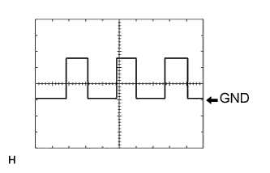

СИСТЕМА СТЕКЛООЧИСТИТЕЛЕЙ И СТЕКЛООМЫВАТЕЛЕЙ > КОНТАКТЫ ЭБУ |
| ПРОВЕРЬТЕ ПЕРЕКЛЮЧАТЕЛЬ СТЕКЛООЧИСТИТЕЛЯ ВЕТРОВОГО СТЕКЛА В СБОРЕ (для моделей с переключателем стеклоочистителя ветрового стекла с левой стороны) |

Отсоедините разъем G120 переключателя стеклоочистителя ветрового стекла.
Измерьте напряжение и сопротивление в соответствии со значениями, приведенными в таблице.
| Номера контактов (обозначения) | Цвет проводки | Описание контактов | Условие | Заданные условия |
| G120-11 (+B) - масса | G - масса | Питание замка зажигания | Зажигание включено | 11 - 14 В |
| G120-11 (+B) - масса | G - масса | Питание замка зажигания | Зажигание выключено | менее 1 В |
| G120-7 (WIG) - масса | G - масса | Питание замка зажигания | Зажигание включено | 11 - 14 В |
| G120-7 (WIG) - масса | G - масса | Питание замка зажигания | Зажигание выключено | менее 1 В |
| G120-9 (EW) - масса | W-B - масса | Масса | Всегда | Менее 1 Ом |
Подсоедините разъем G120 переключателя стеклоочистителя ветрового стекла в сборе.
Измерьте напряжение в соответствии со значениями, приведенными в таблице.
| Номера контактов (обозначения) | Цвет проводки | Описание контактов | Условие | Заданные условия |
| G120-8 (WF) - масса | B - масса | Выход электродвигателя насоса переднего стеклоомывателя | Переключатель переднего стеклоочистителя включен | Менее 1 В |
| G120-8 (WF) - масса | B - масса | Выход электродвигателя насоса переднего стеклоомывателя | Переключатель переднего стеклоочистителя выключен | 11–14 В |
| G120-4 (SPD) - масса | R - масса | Сигнал скорости | Скорость автомобиля составляет приблизительно 20 км/час (12 миль в час) | Формирование импульсов (см. сигнал 1) |
| G120-3 (TAIL) - масса | V - масса | Вход сигнала положения TAIL переключателя освещения | Переключатель освещения в положении TAIL | 11 - 14 В |
| G120-3 (TAIL) - масса | V - масса | Вход сигнала положения TAIL переключателя освещения | Переключатель освещения выключен | Менее 1 В |
| G120-2 (+1) - масса | B - масса | Сигнальная цепь скорости LO электродвигателя переднего стеклоочистителя | Работа электродвигателя переднего стеклоочистителя в режиме LO | 11 - 14 В |
| G120-2 (+1) - масса | B - масса | Сигнальная цепь скорости LO двигателя переднего стеклоочистителя | Электродвигатель переднего стеклоочистителя выключен | Менее 1 В |
| G120-1 (+2) - масса | R - масса | Сигнальная цепь скорости HI переднего стеклоочистителя | Работа электродвигателя переднего стеклоочистителя в режиме HI | 11–14 В |
| G120-1 (+2) - масса | R - масса | Сигнальная цепь скорости HI переднего стеклоочистителя | Электродвигатель переднего стеклоочистителя выключен | Менее 1 В |
| G120-10 (+S) - масса | W - масса | Сигнал работы электродвигателя переднего стеклоочистителя | Электродвигатель переднего стеклоочистителя работает | 11 - 14 В |
| G120-10 (+S) - масса | W - масса | Сигнал работы двигателя переднего стеклоочистителя | Электродвигатель переднего стеклоочистителя выключен | Менее 1 В |
| G120-16 (C1R) - масса | B - масса | Сигнальная цепь скорости LO электродвигателя заднего стеклоочистителя | Зажигание включено, переключатель заднего стеклоочистителя в положении LO | Менее 1 В |
| G120-16 (C1R) - масса | B - масса | Сигнальная цепь скорости LO электродвигателя заднего стеклоочистителя | Зажигание включено, переключатель заднего стеклоочистителя выключен | 11 - 14 В |
| G120-18 (+1R) - масса | R - масса | Цепь сигнала скорости HI электродвигателя заднего стеклоочистителя | Зажигание включено, переключатель заднего стеклоочистителя в положении HI | Менее 1 В |
| G120-18 (+1R) - масса | R - масса | Цепь сигнала скорости HI электродвигателя заднего стеклоочистителя | Зажигание включено, переключатель заднего стеклоочистителя выключен | 11 - 14 В |
| G120-17 (WR) - масса | V - масса | Выход электродвигателя насоса заднего стеклоомывателя | Переключатель заднего стеклоомывателя в положении ON (ВКЛ) | Менее 1 В |
| G120-17 (WR) - масса | V - масса | Выход электродвигателя насоса заднего стеклоомывателя | Переключатель заднего стеклоомывателя в положении OFF (ВЫКЛ) | 11-14 В |
|  |
С помощью осциллографа проверьте форму сигнала 1.
| Позиция | Описание |
| Номера контактов (обозначения) | G120-4 (SPD) - масса |
| Настройки прибора | 5 В/дел., 20 мс/дел. |
| Условие | Скорость автомобиля составляет приблизительно 20 км/час (12 миль в час) |
| ПРОВЕРЬТЕ ПЕРЕКЛЮЧАТЕЛЬ СТЕКЛООЧИСТИТЕЛЯ ВЕТРОВОГО СТЕКЛА В СБОРЕ (для моделей с переключателем стеклоочистителя ветрового стекла с правой стороны) |
Отсоедините разъем G120 переключателя стеклоочистителя ветрового стекла.
Измерьте напряжение и сопротивление в соответствии со значениями, приведенными в таблице.
| Номера контактов (обозначения) | Цвет проводки | Описание контактов | Условие | Заданные условия |
| G120-17 (+B) - масса | G - масса | Питание замка зажигания | Зажигание включено | 11 - 14 В |
| G120-17 (+B) - масса | G - масса | Питание замка зажигания | Зажигание выключено | менее 1 В |
| G120-3 (WIG) - масса | G - масса | Питание замка зажигания | Зажигание включено | 11 - 14 В |
| G120-3 (WIG) - масса | G - масса | Питание замка зажигания | Зажигание выключено | менее 1 В |
| G120-1 (EW) - масса | W-B - масса | Масса | Всегда | Менее 1 Ом |
Подсоедините разъем G120 переключателя стеклоочистителя ветрового стекла в сборе.
Измерьте напряжение в соответствии со значениями, приведенными в таблице.
| Номера контактов (обозначения) | Цвет проводки | Описание контактов | Условие | Заданные условия |
| G120-2 (WF) - масса | B - масса | Выход электродвигателя насоса переднего стеклоомывателя | Переключатель переднего стеклоочистителя включен | Менее 1 В |
| G120-2 (WF) - масса | B - масса | Выход электродвигателя насоса переднего стеклоомывателя | Переключатель переднего стеклоочистителя выключен | 11–14 В |
| G120-6 (SPD) - масса | R - масса | Сигнал скорости | Скорость автомобиля составляет приблизительно 20 км/час (12 миль в час) | Формирование импульсов (см. сигнал 1) |
| G120-7 (TAIL) - масса | V - масса | Вход сигнала положения TAIL переключателя освещения | Переключатель освещения в положении TAIL | 11 - 14 В |
| G120-7 (TAIL) - масса | V - масса | Вход сигнала положения TAIL переключателя освещения | Переключатель освещения выключен | Менее 1 В |
| G120-8 (+1) - масса | B - масса | Сигнальная цепь скорости LO электродвигателя переднего стеклоочистителя | Работа электродвигателя переднего стеклоочистителя в режиме LO | 11 - 14 В |
| G120-8 (+1) - масса | B - масса | Сигнальная цепь скорости LO двигателя переднего стеклоочистителя | Электродвигатель переднего стеклоочистителя выключен | Менее 1 В |
| G120-9 (+2) - масса | R - масса | Сигнальная цепь скорости HI переднего стеклоочистителя | Работа электродвигателя переднего стеклоочистителя в режиме HI | 11–14 В |
| G120-9 (+2) - масса | R - масса | Сигнальная цепь скорости HI переднего стеклоочистителя | Электродвигатель переднего стеклоочистителя выключен | Менее 1 В |
| G120-18 (+S) - масса | W - масса | Сигнал работы электродвигателя переднего стеклоочистителя | Электродвигатель переднего стеклоочистителя работает | 11 - 14 В |
| G120-18 (+S) - масса | W - масса | Сигнал работы двигателя переднего стеклоочистителя | Электродвигатель переднего стеклоочистителя выключен | Менее 1 В |
| G120-12 (C1R) - масса | B - масса | Сигнальная цепь скорости LO электродвигателя заднего стеклоочистителя | Зажигание включено, переключатель заднего стеклоочистителя в положении LO | Менее 1 В |
| G120-12 (C1R) - масса | B - масса | Сигнальная цепь скорости LO электродвигателя заднего стеклоочистителя | Зажигание включено, переключатель заднего стеклоочистителя выключен | 11 - 14 В |
| G120-10 (+1R) - масса | R - масса | Цепь сигнала скорости HI электродвигателя заднего стеклоочистителя | Зажигание включено, переключатель заднего стеклоочистителя в положении HI | Менее 1 В |
| G120-10 (+1R) - масса | R - масса | Цепь сигнала скорости HI электродвигателя заднего стеклоочистителя | Зажигание включено, переключатель заднего стеклоочистителя выключен | 11 - 14 В |
| G120-11 (WR) - масса | V - масса | Выход электродвигателя насоса заднего стеклоомывателя | Переключатель заднего стеклоомывателя в положении ON (ВКЛ) | Менее 1 В |
| G120-11 (WR) - масса | V - масса | Выход электродвигателя насоса заднего стеклоомывателя | Переключатель заднего стеклоомывателя в положении OFF (ВЫКЛ) | 11-14 В |
С помощью осциллографа проверьте форму сигнала 1.
| Позиция | Описание |
| Номера контактов (обозначения) | G120-6 (SPD) - масса |
| Настройки прибора | 5 В/дел., 20 мс/дел. |
| Условие | Скорость автомобиля составляет приблизительно 20 км/час (12 миль в час) |
| ПРОВЕРЬТЕ УПРАВЛЯЮЩЕЕ РЕЛЕ ОЧИСТИТЕЛЯ ФАР |
Отсоедините разъем A38 реле управления очистителем фар.
Измерьте напряжение и сопротивление в соответствии со значениями, приведенными в таблице.
| Номера контактов (обозначения) | Цвет проводки | Описание контактов | Условие | Заданные условия |
| A38-1 (HDLO) - A38-4 (E) | V - W-B | Сигнал фар ближнего света | Переключатель света фар в положении HEAD | 11 - 14 В |
| A38-1 (HDLO) - A38-4 (E) | V - W-B | Сигнал фар ближнего света | Переключатель света фар не в положении HEAD | Менее 1 В |
| A38-3 (IG) - A38-4 (E) | L - W-B | Питание замка зажигания | Зажигание включено | 11 - 14 В |
| A38-3 (IG) - A38-4 (E) | L - W-B | Питание замка зажигания | Зажигание выключено | менее 1 В |
| A38-4 (E) - масса | W-B - масса | Масса | Всегда | Менее 1 Ом |
| A38-5 (FRWA) - A38-4 (E) | B - W-B | Сигнал управления переключателя переднего стеклоомывателя | Выключатель электродвигателя переднего стеклоомывателя включен | Менее 1 В |
| A38-5 (FRWA) - A38-4 (E) | B - W-B | Сигнал управления переключателя переднего стеклоомывателя | Выключатель электродвигателя переднего стеклоомывателя выключен | 11–14 В |
| ПРОВЕРЬТЕ РАСПРЕДЕЛИТЕЛЬНЫЙ БЛОК СО СТОРОНЫ ВОДИТЕЛЯ И ГЛАВНЫЙ ЭБУ КУЗОВА (БОРТОВОЙ ЭБУ СЕТИ МУЛЬТИПЛЕКСНОЙ СВЯЗИ) |

| *A | Для моделей с левосторонним рулевым управлением | *B | Для моделей с правосторонним рулевым управлением |
Снимите главный ЭБУ кузова (бортовой ЭБУ сети мультиплексной связи) (Нажмите здесь).
Измерьте напряжение и сопротивление в соответствии со значениями, приведенными в таблице.
| Номера контактов (обозначения) | Цвет проводки | Описание контактов | Условие | Заданные условия |
| A-30 (BECU) - масса | - | Питание аккумуляторной батареи | Всегда | 11 – 14 В |
| A-31 (ALTB) - масса | - | Питание аккумуляторной батареи | Всегда | 11 – 14 В |
| A-32 (IG) - масса | - | Питание замка зажигания | Зажигание включено | 11 - 14 В |
| A-32 (IG) - масса | - | Питание замка зажигания | Зажигание выключено | менее 1 В |
| A-29 (ACC) - масса | - | Источник питания ACC | Замок зажигания в положении ACC | 11 - 14 В |
| A-29 (ACC) - масса | - | Источник питания ACC | Зажигание выключено | менее 1 В |
| A-11 (GND1) - масса | - | Масса | Всегда | Менее 1 Ом |
| G63-3 (GND2) - масса | W-B - масса | Масса | Всегда | Менее 1 Ом |
Установите главный ЭБУ кузова (бортовой ЭБУ сети мультиплексной связи) (Нажмите здесь).
Измерьте напряжение в соответствии со значениями, приведенными в таблице.
| Номера контактов (обозначения) | Цвет проводки | Описание контактов | Условие | Заданные условия |
| G63-16 (HDLO) - G63-3 (GND2) | V - W-B | Сигнал фар ближнего света | Переключатель света фар в положении HEAD | 11 - 14 В |
| G63-16 (HDLO) - G63-3 (GND2) | V - W-B | Сигнал фар ближнего света | Переключатель света фар не в положении HEAD | Менее 1 В |
| G64-19 (BCTY) - G63-3 (GND2) | G - W-B | Вход выключателя освещения проема двери багажного отделения | Открывание двери багажного отделения | Менее 1 В |
| G64-19 (BCTY) - G63-3 (GND2) | G - W-B | Вход выключателя освещения проема двери багажного отделения | Дверь багажного отделения закрыта | Формирование импульсов (см. осциллограмму 1 или 2) |
| G64-1 (GCTY) - G63-3 (GND2) | V - W-B | Вход выключателя освещения проема заднего стекла | Проем заднего стекла открыт | Менее 1 В |
| G64-1 (GCTY) - G63-3 (GND2) | V - W-B | Вход выключателя освещения проема заднего стекла | Зажигание выключено, все двери и проем заднего стекла закрыты | Формирование импульсов (см. осциллограмму 3 или 4) |
| G63-20 (RWMR) - G63-3 (GND2) | B - W-B | Вход питания заднего стеклоочистителя | Зажигание включено, заднее стекло открыто | Менее 1 В |
| G63-20 (RWMR) - G63-3 (GND2) | B - W-B | Вход питания заднего стеклоочистителя | Зажигание включено, заднее стекло закрыто | 11-14 В |
 |
С помощью осциллографа проверьте форму сигнала 1.
| Позиция | Описание |
| Номера контактов (обозначения) | G64-19 (BCTY) - G63-3 (GND2) |
| Настройки прибора | 5 В/дел., 20 мс/дел. |
| Условие | Дверь багажного отделения закрыта |
 |
С помощью осциллографа проверьте форму сигнала 2.
| Позиция | Описание |
| Номера контактов (обозначения) | G64-19 (BCTY) - G63-3 (GND2) |
| Настройки прибора | 5 В/дел., 20 мс/дел. |
| Условие | Дверь багажного отделения закрыта |
|
С помощью осциллографа проверьте форму сигнала 3.
| Позиция | Описание |
| Номера контактов (обозначения) | G64-1 (GCTY) - G63-3 (GND2) |
| Настройки прибора | 5 В/дел., 20 мс/дел. |
| Условие | Зажигание выключено, все двери и проем заднего стекла закрыты |
|
С помощью осциллографа проверьте форму сигнала 4.
| Позиция | Описание |
| Номера контактов (обозначения) | G64-1 (GCTY) - G63-3 (GND2) |
| Настройки прибора | 5 В/дел., 20 мс/дел. |
| Условие | Зажигание выключено, все двери и проем заднего стекла закрыты |